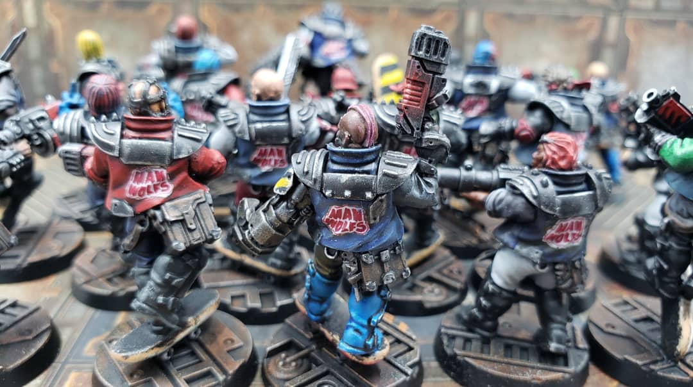
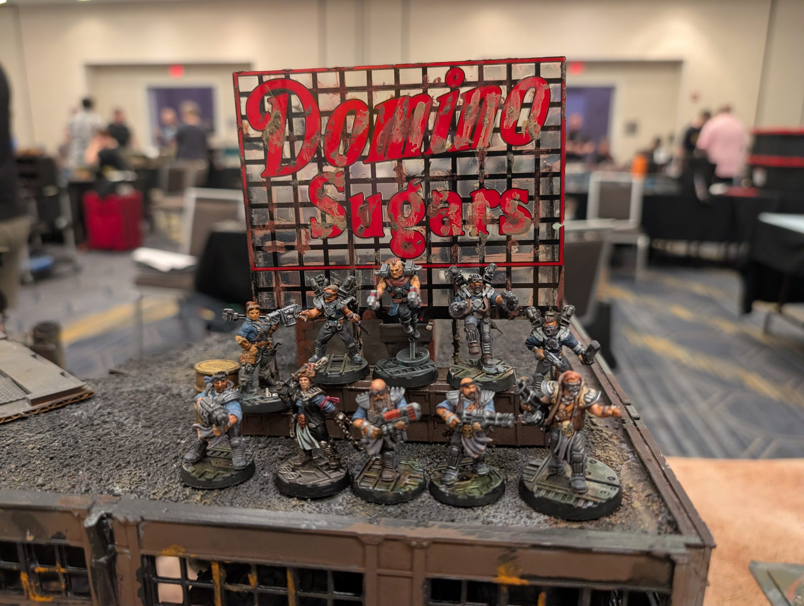
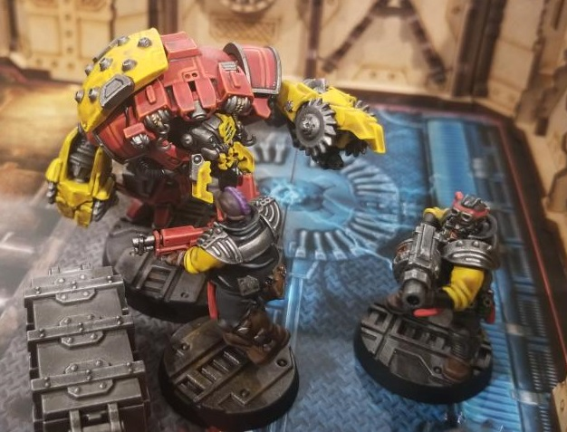
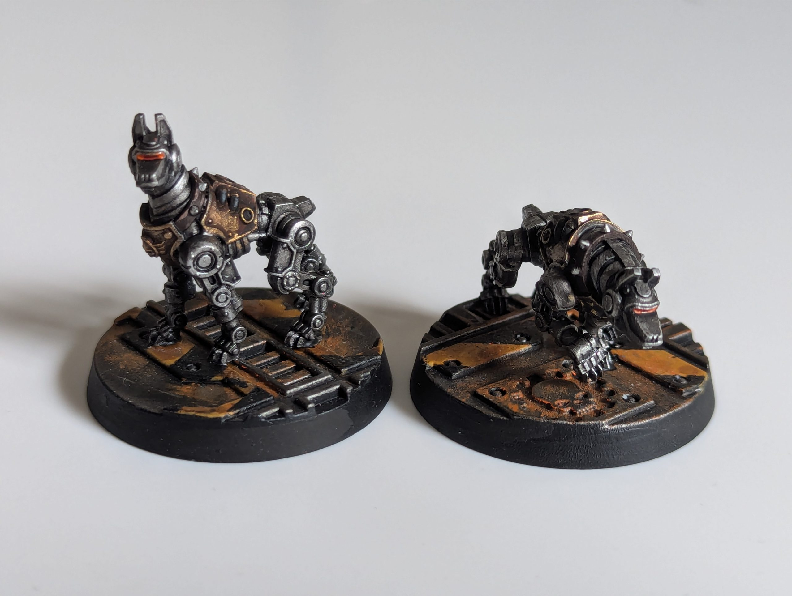
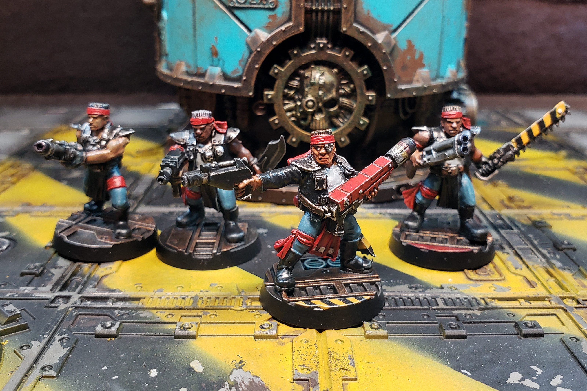
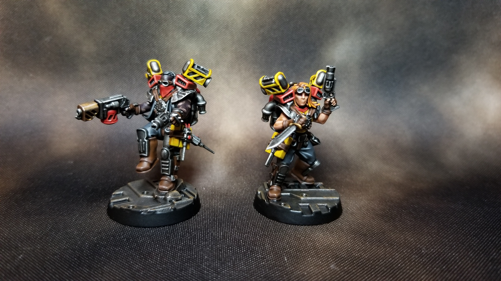
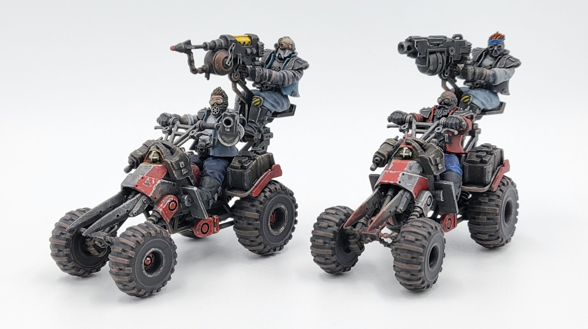
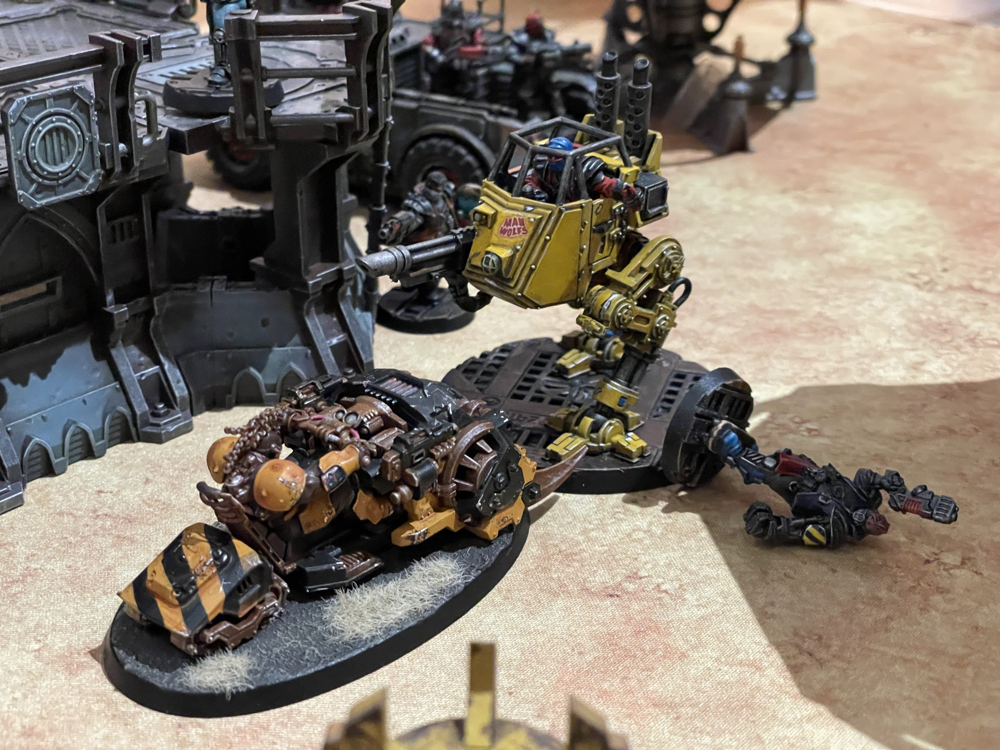
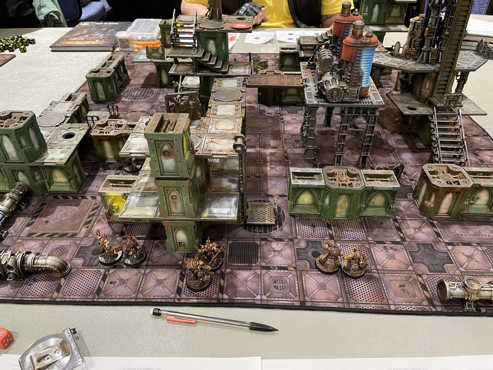
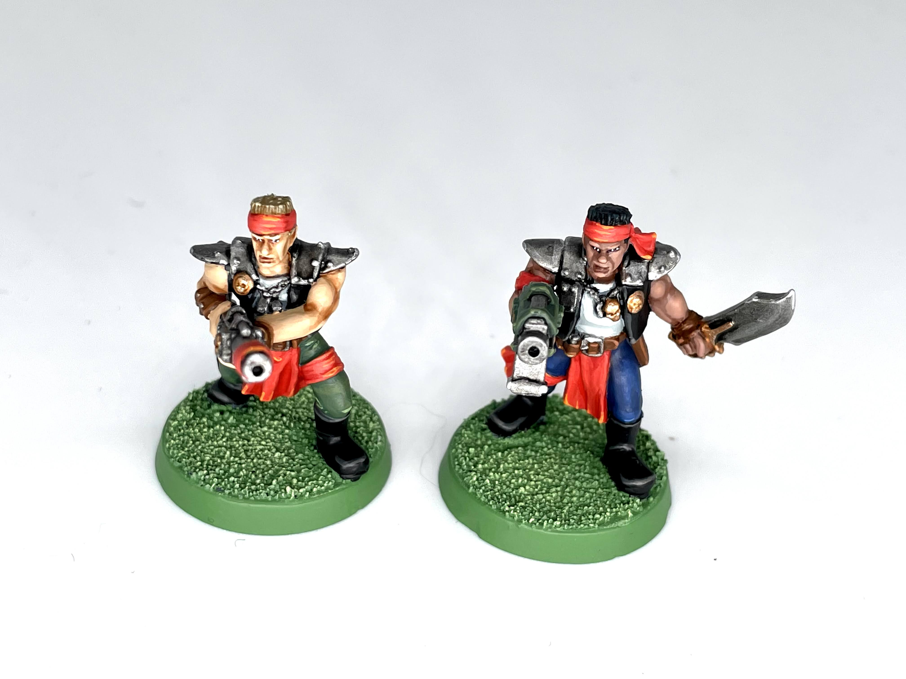

Tabletop Battles Reviews: Underhive Journal - Orlocks
Lock and load, road warriors! The journal for the undisputed best and coolest house in the Underhive and/or the Ash Wastes, House Orlock, is here at last. All the other houses can suck our exhaust pipes. We would like to thank Games Workshop for providing us with a preview copy.
Following the release of the Goliath and Escher journals, the House of Iron Underhive Journal expands options for players wishing to field an Orlock gang. A spiritual successor to the N17 House of Iron Book, this journal includes new fighters, variant gangs, Legendary Names, Bravado Skills, House Tactics, Territories, and Side Jobs. The structure matches what we’ve seen in previous journals, with variant lists requiring different compositions and new fighters coming with house skills as part of their profile. The variant gangs are very flavorful, allowing players to make either Wrecking Crews that fly around everywhere or Outrider Gangs with the potential to put everyone on wheels.

Credit: FowlerLore & Artwork
The broad strokes here are the same as the earlier House of Iron book. The House rose up from duster clans, overthrowing established interests, and survived its own internal schism when they grew out of touch with their roots, eventually re-establishing the social contract and robust structure that keeps them going to the ‘present’ day. Some interesting new information summarises their role in the Aranthian Succession, which we won’t spoil here, although as with most of that meta-plot, it seemingly exists to allow the status quo of Necromunda to continue.
Genghis Cohen: I absolutely love the Orlocks. They’re a bunch of dirty, roughneck prospectors, road warriors, sleazy louts and hardened brawlers. I think their society seems gritty, obviously dystopian, and yet somehow more relatable or survivable than the other Houses, which are all, let’s be honest, total weirdos.
Primaris Kevin: Orlocks are the everyman of the Necromunda setting. When Necromunda was focused on the Underhive, they were the blue collar workers who dug into the slag heaps and brought out the raw material that the other Houses depended on. Where Van Saar are cancer-ridden tech bros and Goliaths are roid-fueled lunks, Orlock just seem like a bunch of regular folk trying to survive. Also in case it’s not obvious Genghis was the one who wrote the intro blurb.
Bravado Skills
The first area we’re going to cover is the Bravado skill tree, which is only available to House Orlock (unless you roll a 12 on the Advancement table). Following the pattern of previous journals, these Skills are available as Primary to all Orlock Fighters, across all gang variants, which is obviously nice for flexibility and options. Like most rule sets the skills have varying levels of viability, with some being useful and others being situational to the point that it’s unlikely that they would ever see use unless forced.
- Beast Trainer grants +1A to any of the user’s Pets while they are in Leash range. This is a highly thematic skill, as Cyber-mastiffs are pretty expensive at 65 credits and their Leash range is only 3”. You have to be careful about the order of operations here, since if the Pet charges before their owner then they would likely be out of Leash range when they make their attacks. Cyber-mastiffs are limited to 5” of movement, which makes it difficult to use them in Wrecker Crews or Outrider Gangs. Rating: C
- Bring it On! This skill grants the Issue Challenge (Single) skill, which forces an enemy Fighter within 12” to make a Willpower check to target a model other than the Fighter issuing the challenge. The effect ends when either another model attacks the affected Fighter or the round ends. There’s no requirement for Line of Sight so this skill could be used to taunt an enemy while hidden. Like a coward. Rating: D
- Demolitionist skill permits you to target and destroy obstacles, which are defined in the core rulebook as small bits of terrain less than 2” across. The attack automatically hits and the target has a Toughness characteristic of 4. If the attack successfully wounds then the obstacle is destroyed. It opens up interesting tactical options, but removing cover from opponents or clearing the way for movement might often be less useful than making direct attacks. Where things get interesting is with Blast weapons, as you can simply auto-hit the obstacle and anything around it. This makes the Orlocks’ signature Blasting or Demo charges absolutely terrifying, but be advised this could easily fall into “not fun” territory for your opponent. The same is true if a Rapid Fire (X+) weapon is used with the Walking Fire option in the Arbitrator’s Toolkit. That should probably be fixed with errata. Rating: B+
- Shotgun Savant grants the Reliable trait to any shotgun that the Fighter uses, and also has them always count as being within the weapons Short Range for the purpose of cover (meaning cover never grants more than a +1 to saves against them). The reduction in saves is a minor but useful improvement, but the Reliable trait is a significant benefit. Shotgun scattershot profiles are typically Rapid Fire (2) while the combat shotgun has the Ammo (6+) trait. Ignoring the first Out of Ammo result means neither weapon will jam and most of the time the Fighter will be able to shoot again. Rating: B+
- Strong Arm gives grenades an additional 3” of range, which means a prepubescent Juve can somehow throw a blasting charge further than a stimmed-out Ogryn. Grenades are a useful weapon in Necromunda, especially since the presence of objectives means that combat is much closer and focused on static locations. Grade: B
- Sucker Punch grants the Fighter a single melee attack that strikes at I10, but only hits at the Fighter’s strength with no AP, Lethality 1, and the Concussive (5+) trait. Perhaps there will be one time, in the midst of multiple painful humiliations, where your ganger can lay out an attacker (provided they have 1W) before they can get scragged. Don’t bet on it. Rating: F
Primaris Kevin: Shotgun Savant is clearly the winner here, and I find Strong Arm to be interesting since it’s the only way to make Grenades have any kind of range. Combining Hip Shooting with Strong Arm could make for a lot of flexibility (although be warned that using the jump-booster with a Blast or Template weapon makes the weapon Unstable). I hope GW considers the implications of allowing a weapon to Auto-Hit an Obstacle and provides some clarification, particularly with the Waking Fire rule.

Jim's Orlocks at the GHO 2026 Necromunda Weekender. Credit: Kevin GensonNew Gangers
House of Iron adds five new fighters that can be taken by gangs that use the GotU rules in unrestricted numbers. As with other gang journals, these Fighters are Gangers that lose the Specialist rule and gain a few Advancements for a price premium and 6 XP. Normally going from 13 to 19 XP would only provide a single Advancement, so getting a stat boost and an extra skill is pretty good. The baseline Orlock Gunner is 40 credits with Brawn as a Primary skill and Combat and Shooting as a Secondary skill.
- Road Blasters cost 55 credits and gain +1 Willpower, change their Primary skill from Brawn to Shooting, and have the Hip-shooting and Overwatch skills. This is equivalent to 35 credits worth of Advancements and consists of two very solid skills. Road Blasters are not available to Wrecking Crews
Genghis: These should probably be the default choice for building ordinary Gangers using ranged weapons. Taking a Gunner Gunner (a normal Gunner specialist with Hip Shooting) now seems downright silly, quite apart from the name.
- Road Shooters also cost 55 credits and gain +1 Cool, swap Shooting for Bravery as their Primary skill, and have the Gunfighter and Shotgun Savant skills (15 credits worth of Advancements). Road Shooters are not available to any variant gangs and are the only Fighter that has access to the servo shotgun (a 20 credit shotgun with Assault, Light, and Rapid Fire (1) traits).
Genghis: As tempting as the starting skill is for a regular or combat shotgun carrier, it's probably not as good as taking Hip Shooting or using a Road Blaster. But if you are specifically using the Light shotgun types, these dudes are neat. The servo shotgun has marginal benefits over cheaper basic guns, and it might fall into the awkward middle ground between budget firearms and saving up credits for something really useful like a bolt pistol. But it’s not bad at all.
Primaris Kevin: If you’re fielding a Road Shooter then the servo shotgun is really the only weapon you’re going to take. At 95 credits that’s a major investment in a 1 wound model that will want to stay within charge range of the enemy but not actually touch close combat. It doesn’t feel worth it to me.
- Road Enforcers are the melee variant. They cost 65 credits for an extra attack and access to Combat as Primary Skills with Brawn and Agility as Secondary. They get Bring it On and Counter-Attack leading to a total of 30 credits of Advancements over a Specialist. Their unique weapon is the pneumatic hammer. 50 credits gives you a single weapon with S+2, L2, and Concussive (5+); for an additional 15 credits you can take the paired variant which adds Paired (2). Road Enforcers can be taken by both variant gangs.
Genghis: Counter-Attack is actually quite handy on a fighter with a punchy melee weapon, letting them at least threaten mutual destruction to any enemies engaging them in close combat. Having it even gives some theoretical utility to Bring it On, but at the end of the day, that’s just a trash skill. Nonetheless, especially since the close combat options for normal Specialists are so limited, this is a fighter which may well be included in Orlock gangs. Their exclusive weapon is so-so.
- Road Engineers are the Savant types, and unlike their counterparts in Goliath or Escher gangs, they don’t have any medical gear or abilities. 55 credits get you +1 Intelligence and the Strong Arm and Demolitionist Skills. Their Primary skill is Savant and Shooting and Brawn are the Secondary options. Both of the variant gangs can field Road Engineers. They have access to two unique pieces of equipment. For 15 credits they can carry Mechanic Kits, which are medi-packs for Vehicle Recovery tests. This will likely be useful when more vehicles are added, as right now the only option is the Ridge Hauler. Scrap welders cost 100 credits for a ranged weapon with a 6” long range, S6, AP -3, L2, and the Ammo (5+) and Damage (2) traits.
Genghis: We’ve mentioned the abusable nature of Demolitionist grenades before, and even if your group frowns on those shenanigans, there aren’t many other roles these fighters excel at. They can get Shooting and Brawn skills as Secondary, but in anything bar hucking blasting charges at people and obstacles, the normal Specialists are going to out-do them in starting performance. Scrap welders are impressive, but the issue is Road Engineers don’t have anything which makes them a good candidate to carry such a weapon. If you could put this on a Gunner Gunner (Orlock Specialist with Hip Shooting) it would be quite cool, although in competition with the 140-credit, vastly superior meltagun. As is, it just isn’t a sensible pick to give to an engineer, unless they luck into certain Advances first.

Credit: Dan BoydNew Brute
Ogryn Minders are the hot new Brute on the block, coming in at 155 credits base, potentially up to 230 fully kitted out. For that, you get a full-fat Brute statline (S/T 5, 3W) with an acceptable WS4+ and poor BS5+. Their Primary skill is Brawn and their only Secondary skill is Combat. Ogryns have the Bring it On Skill, and this context (a fighter who will be Wounded on 5s or 6s by small arms fire and naturally has the Juggernaut Skill to avoid being Suppressed) is probably the best possible showcase for that skill. Overshadowing everything is the Minder’s excellent special rule called Bodyguard. The Minder can accept ranged hits given to any friendly Leader or Champion within 2”. The only restriction is that the Ogryn needs to be Active or Suppressed. That’s extremely forgiving, as this guy is literally a meatshield.
It’s important to note that, like other Brutes, you cannot change the loadout of an Ogryn Minder once they’re added to the Gang Roster. Ogryn Minders come with a Maul as their default weapon, and can upgrade to a Spud-Jacker for 5 credits. They can alternatively pay 20 credits to upgrade to Knuckledusters, which are S+1 and L2, but most importantly Paired (2). We think those are decisively the best option, it’s the only way for an activating Ogryn to gain extra Attacks and those are too good to pass up. More of a commitment is the Ripper Gun. It’s not cheap, at 55 credits, but it’s S5 and RF(2), with shotgun ranges and Assault. Obviously Ogryns are poor shooters. On the other hand, it’s the only way a Minder can reach out and touch enemies - no grenades or other wargear for Brutes - and it’s good value in itself.
Genghis: Of course there are issues with taking a Brute model (no small investment) just to provide ablative Wounds to your Leader/Champ, but we can’t deny the power combo potential of, say, a Heavy Bolter-toting Road Sergeant standing next to an Ogryn Minder. As far as we can tell, opponents have to shoot the latter down or out before they even touch the Sergeant. Arbitrators may want to rule on Blast/template weapons and whether the Ogryn can still take the hit from their comrade if they’ve already been hit themselves - RAW, it’s a clear ‘yes’. But bear in mind that the Bodyguard effect is only against ranged attacks, and if you're keeping a valuable, short-ranged Brute far back outside of any close combat threat, it's a powerful but inefficient tactic.
Primaris Kevin: I would argue that the Minder is best as a close support option to help your Leader and Champions get to those valuable objective markers. T5 is pretty resilient and the ability to shrug off most Suppressed is fantastic. At close range your opponents are likely to target the Minder anyway because it’s a damn Ogryn. All of the ogryn’s skills are oriented towards melee as well. Note that three of the skills available to the model (Bulging Biceps, Heavy Blows, and Two-Weapon Fighter) require equipment weapons that the model can’t field and therefore should be allowed to be re-rolled as they “cannot be used by the model” per page 150.

Credit: Genghis CohenAdditional Equipment
GW added a pretty wide selection of new equipment beyond the fighter-exclusive stuff mentioned above to the Orlock equipment list. Note that a plasma pistol was also added per the September errata. These additions give at least some variety to their close combat weapons, which were an extremely narrow selection previously.
- Outrider flails cost 20 credits. They compete pretty well with the chainsword or the axe from the Trading Post while being a better deal than the generic flail. It’s AP-1 with Knockback (6+) and Shred (6+). A decent option for melee fighters without breaking the bank.
- Trophy maces provide more of a mid-high cost option at 35 credits, striking at S+1 and L2. The only trait is Concussive (6+) which doesn’t do much, but 35 credits for a solid chance at wounding at a 3+ and a 30% chance to take the target Out of Action makes this worth the premium.
- Dirtnap servo-claws cost 55 credits for a S+2, AP 0, L2 weapon with Knockback (5+), Paired (2), and Unwieldy. We are not big fans of the stock Servo Claw - its profile, while not bad, doesn’t seem too scary for an Unwieldy weapon. The 15 credit premium on the Orlock version provides a boost, but it doesn’t stop the Fighter from hitting last.
- Spud-jackers cost 25 credits for a S+1, AP 0, L1 profile with Concussive (6+) and Knockback (6+). This puts it in the same price point as chainswords and outrider flails, and it doesn’t seem to hold up.
Genghis: As seen for Goliaths and Ogryns, this is a pretty mid close combat weapon, but all options are welcome - finally our Orlock petrol heads have the chance to whack people with wrenches, as the God-Emperor intended.
- Scrap shields are probably the second biggest single improvement to Orlocks in this book, just behind Legendary Names. 35 credits gets you a basic melee weapon with the Parry and Shield traits, granting the wielder a +1 save for melee and ranged. A very strong piece of kit which should always be considered for valuable Fighters.
- Bottle of Wild Snake is a weird one. We try not to be too mean when reviewing things, but honestly, the writers must have been a few bottles deep themselves when drafting the rules for this. This wargear lets the model spend an Action to gain +1 to Cool checks, but -1 to Intelligence, for the remainder of the game. It is a one use item, using it means deleting it from the fighter’s card. It’s hard to properly emphasise how pointless this is, it’s just burning 15 credits to no avail.
Genghis: I also want to point out the skew-whiff economy in the Underhive which this item entails. A bottle of spirits is worth as much as 3 (admittedly shoddy) handguns? No wonder everyone seems so irritable all the time. Perhaps some kind of temperance message from the teetotallers at GW?
Primaris Kevin: I wish I knew the logic behind this. It feels like GW just needed to fill up space.
- Guard mastiffs let you bring even more dogs to the table… assuming they share a base with their handler. If you saw the model release previewed on WarCom and wondered how the rules would account for a cyber mastiff modelled onto the same base as the fighter, well, this is it. For 75 credits, a fighter gets 2 Extra Attacks at S4, AP-1. We are conflicted here on whether that is any good. It only kicks in when the fighter is Activating, and the attacks aren’t that punchy for 75 credits. On the other hand, extra attacks are an unusual way of raising a fighter’s threat ceiling. Our instinct is that this compares well with a normal Cyber-mastiff (which has 1A base, so 2 on the Charge, at S3, A-2). It doesn't give you another piece on the board, but wargear on a 2W or 3W model with a better save will often stick around longer than a Cyber-mastiff, and it's easier to bring the attacks into play than mucking around with positioning your Pet and abiding by Leash range.

Classic Orlocks. Credit: FowlerVariant Gangs
Two variant gangs are featured in this book, and, we should note that both of these variant gangs are very strongly themed by virtue of their mandatory fighters. Wrecking Crews will always include lots of models with jump boosters, and Outrider Gangs will always include at least a few mounted on Outrider Quads. While potentially challenging from a modeling perspective, they do both offer a unique twist which will look and play very differently to a plain Orlock gang. This is reinforced by their lack of access to the ‘ordinary’ Orlocks - neither gang can take plain Gunner (ie ganger) Specialists. That rather glaring omission costs them a lot of flexibility.

Orlock Wreckers. Credit: Dan BoydWrecking Crew Gangs
A Wrecking Crew swaps out the incredibly mediocre Drudging Classes rule of the original gang (seriously GW at least change it so that Hired Guns can work territory or something) for an even more useless ability called Fire In the Hole! This special rule lets a Wrecking Crew Fighter get a 5+ Invulnerable save against Blast weapons that were fired by a friendly Fighter. That’s it. There are only three scenarios where this will happen. First, if a Fighter throws a grenade “danger close” to their buddies. Second, if a Fighter misses a shot and rolls a 1 and a Hit on the Scatter dice. Third, if a Fighter throws a grenade while using a jump booster (which gives Blast and Template weapons the Unstable trait). This is incredibly useless.
Wrecking Crews have a very restrictive gang list. They’re allowed a single Road Sergeant (the only Fighter in the list with Shooting as a Primary skill), but cannot field Road Shooters, Road Blasters, or any Orlock Gunner Specialists. They also do not have access to Arms Masters, which is a shame as their ability to re-roll Bottle checks can be useful. There’s a requirement to take at least 2 Wreckers and 1 Wrecker Scout (the ganger level equivalent) which is no great hardship, but strongly steers the gang’s theme. Together with their new Demolitions Captain leader, a starting gang must include at least 4 models with Jump Boosters. They do get the option to take 0-3 Road Engineers and 0-3 Road Enforcers, 0-2 Greenhorns, and unrestricted numbers of Cyber-Mastiffs and Ogryn Minders.
Genghis: No starting access to Specialists is quite restrictive. The only option to do certain things most gangs take for granted, like use twin pistol models or take dedicated Munitioneer/Medic support, is to promote a Wrecker mid-campaign.
Primaris Kevin: I won’t pretend to understand it, but it seems like there are no prohibitions against putting a Fighter with a jump booster on a dirt bike or Outrider Quad. I suddenly feel compelled to strap rocket boosters onto dune buggies. Is this how Meks are born?
There are a couple of important ranged weapons missing compared to normal Orlocks - no grenade launchers or plasma guns available here. Of course they aren’t that hard to get from the Trading Post, and there are other strong options (like Bolt weapons) on the list. But that reinforces the impression, as with the lack of Road Blasters, that this is meant to be a more close combat-oriented gang variant. Otherwise, as we have seen with other gang variants, there aren't any dramatic departures.
Are these trade-offs worthwhile? It’s hard to say. Gangs that go hard into mobility are just inherently fun to play - they reward taking risks and making big exciting plays. On the other hand mobile shooting plays would be a lot more effective if this gang variant had more ways to access Hip Shooting. The rules seem to steer players more towards using the Wrecking Crew as a gang which is, at least partly, devoted to close combat. That can absolutely work for Orlocks, but has built in risks if your opponents have a similar mindset and play, for instance, Goliaths, Escher or Corpse Grinders.
Primaris Kevin: I suspect that this will still be a strong option just because of the maneuverability. N26 is way more focused on movement and objectives than previous editions, and close combat is far more likely to happen when victory depends on you taking a position.
The Wrecking Crew comes with several unique Fighters, with most of them naturally focusing on jump boosters.
- Demolitions Captain. Costing 60 credits more than a Road Captain, the Demolitions Captain gains an extra attack, loses a point of Willpower, and comes equipped with the Strong Arm skill and a jump booster. They have Brawn and Savant as their Primary skills with Combat and Shooting as Secondary skills.
Genghis: The boost to close combat punch on the charge which you get from a Jump Booster is one thing on a Prospect-classed Wrecker; it's quite another on this guy. The only hesitation I really had here was which of my existing Wrecker models was going to be ripped apart to make a dedicated model for this Leader type. I'm wondering if Dirtnap Servo Claws are too extravagant for a starting gang roster…
Primaris Kevin: Savant as a Primary means that these are the only guys in the entire gang who can start with the Medic skill. That might be worth considering.
- Demolitions Master. Costing 110 credits with a profile similar to a Road Sergeant with +1 cool, these guys are a weird one. Their skills are Brawn and Combat Skills as Primary and Savant as Secondary. They inexplicably don’t have a jump booster but have the Demolitionist and Heavy Blows skills, suggesting that their sole purpose in life is to carry a big hammer and break things. This is the same niche as an Arms Master in a conventional gang, but they lack that fighter’s excellent rule to re-roll Bottle Checks or T4.
Genghis: Honestly these are my major disappointment from the variant gang alongside the special rule. But they could have just given him a jump booster as well. Maybe they were worried about the gang being too one note, or that prospective players needed some use for the booster-less models included in the relevant box.
- Wrecker Scout. 90 credits gets you a Ganger with a jump booster, along with the Dodge and Headbutt skills, and you must field at least one of them in a Wrecking Crew. Agility is their Primary skill while Cunning and Shooting are Secondary. Other than that they have a slightly better Cool characteristic.
Genghis: It’s definitely important to the gang to get access to jump booster-equipped Gangers that don’t suffer from the poor WS/BS of normal Prospect Wreckers. Agility as a Primary Skill has very good further options (notably Spring Up and Sprint) while others are made irrelevant by having a Jump Booster (Clamber, Mighty Leap). These dudes are part of why Wrecking Crews seem to lean into close combat. Get in there and start headbutting and flailing your enemies.

Orlock Outrider Quads. Credit: FowlerOutrider Gangs
Outriders gain the Devils on Quads rule which grants +1 to their Cool characteristic while they are equipped with a Mount. Since all Mounted subtypes automatically gain the Nerves of Steel skill this is a pretty solid benefit. Their Custom Rides special rule grants access to the Modify Mount Post-cycle Action, which allows the Fighter to modify any Mount that they are equipped with.
Genghis: This is unapologetically a gang variant for mounted combat. The special rule keys off it and you’re locked into buying some mounts from gang creation. Those same factors make it positively counterproductive to choose if you are intending to play on complex, multi-level tables with lots of narrow walkways, ladders, and tight spaces. Honestly, this is thematically at least as big a win for Orlocks as the Wrecking Crew, but it won't be a common choice outside of Ash Wastes campaigns, so I was overjoyed, while drafting this review, to hear confirmation that setting will be expanded on and supported into N26 from spring next year. As we will see, if you want to play a biker style gang where most or all fighters are mounted, this variant, for some initial stovepiping, is markedly better than other Orlocks.
As cool as Custom Rides sounds, the Modify Mount Post-cycle Action requires the Fighter equipped with the Mount to make the action. This means that a Leader who wants to add an upgrade has to waste an entire Post-cycle Action to do it, which is a massive opportunity cost since that means they can’t visit the Trading Post or do anything else. Worse yet only one modification is permitted per Post-cycle Action. This is stupidly prohibitive for such a minor and limited benefit.
Primaris Kevin: As an Arbitrator I would immediately throw away the requirement that a Fighter use the Modify Mount Post-cycle Action to equip something on their Mount. It’s wargear, and not very good wargear at that. I might consider making it so that the upgrade could be added for free instead of being purchased; then it’s at least somewhat comparable to the 15 credits a Fighter gets for the Work Territory Post-cycle Action.
These are the upgrades that are currently available for the Modify Mount Post-cycle Action:
- A Gun Harness lets the fighter carry a 4th weapon. Truly useless, since Mounted fighters are forbidden most Heavy weapons, or Paired weapons, or using two pistols or a Secondary close combat weapon. We really struggled to see any way you could even build a mounted fighter who could plausibly fill 4 weapon slots (beyond just buying more guns for redundancy). Perhaps if taking a chain lance (from the TP) and a harpoon launcher, which both take up 2 slots. At 30 credits, no one will ever take this.
Genghis: I already thought just 4 wargear options was a little mean - surely they could have fit in 6. I'm positively angry they wasted space on this instead of putting in something either useful, cool or funny.
- Glys-injectors can add D3” to your movement, but on a natural 1 you take a punchy hit and become Suppressed. The wording on this is confusing, but we interpret a “natural 1” in the context of a D3 to still be the actual number 1 on the D6 per the core rules. There are also some odd interactions with the Suppressed status and how it impacts the number of actions the model gets. Honestly, not really worth while for 20 credits - for that level of risk they could have made it a flat 3” - but it is funny and characterful. Perhaps there will be some moment you can catch an opponent out with a charge or objective grab they thought impossible.
Primaris Kevin: The issue is that, per the rules, a model that is Suppressed has its marker removed at the end of their next activation. Since it seems incredibly punishing for a model to lose two actions, the best we can think of is that the number of actions a model gets is determined by their status when they are activated. In this case the model was Active when they were activated, so they have two actions. The following activation they would be Suppressed and then only have one action. This potentially has a bit of an exploit with a Charge action, since you could use that extra movement to become Engaged with an enemy model and automatically lose the Suppressed status.
- Smoke projectors are actually good! Similar to the old N23 vehicle kit, for 20 credits they let you place 2 smoke markers (3” diameter) within 2” of the user, which is quite forgiving, since it's not ‘wholly within’. Smoke is a powerful tool, especially when you don't have to pass any rolls to place it, so this being once per battle is probably for the best. It opens up cool tricks like shooting and then vanishing behind smoke to hide from return fire, or zooming up with one rider, and creating a 6” wide smokescreen to hide the other gangers rushing forward later in the Round.
- Wheel scythes, a classic road warrior, death race type trope, are not as tactically interesting, but much more straightforward - the user gets +1A on the charge for 20 credits. Honestly great and something any close combat-equipped fighter will want to take sooner or later.
Outrider gangs have their own unique Leader, the Outrider Captain, and must take at least 1 Outrider Sergeant (Champions) and 1 Outrider Scout (Prospects), which are all recruited on Outrider quads. Makes sense, it’s in the name, right? They can take 0-3 Road Enforcers, 0-3 Wreckers, and 0-1 Ogryn Minders, with free access to Road Blasters, Road Engineers, Arms Masters and Cyber-Mastiffs. As noted, there are no Greenhorns or Gunners here, so you’ve very limited access to Specialists (only by promoting your Wreckers and Outrider Scouts). These restrictions mean you need at least 3 Outrider quad models (or suitable proxies thereof) to even play the gang. Of course all the fighters in the list (bar Ogryns and Mastiffs) can take Dirtbikes or Outriders themselves, and should consider it. But it curtails your options at gang creation, assuming a normal limit of 1k credits, quite a lot. Those 3 mandatory fighters are 525 credits! The equipment list for an Outrider Gang is very similar to that of a standard Orlocks. The only significant omission we see is the meltagun, which you can easily purchase off the Trading Post thanks to your Leader having the Connected skill.
Primaris Kevin: As cool as they are, Ogryn Minders would really struggle in this gang unless there’s a truck for them to ride in. They cannot be equipped with additional weapons or wargear. Everyone else can buy a dirt bike or Outrider Quad.
Just to explain some of the context to readers who may not be familiar with House Orlock. Outrider quads are Mounts, with the mobility boosts and packaged rules of that Sub-type. They also include an Independent weapon, so it fires, on a fixed BS4+, whenever the rider makes a ranged attack. It can’t directly benefit from any Skills, e.g. the rider having Marksman won’t make the BS roll easier at Long Range. But it does benefit from some important Skills. Hip Shooting (or just using any Assault weapon) lets you Dash and then make a Shoot action. As the Shoot action is a ranged attack the Independent gun fires as well. You can use Fast Shot to make two ranged attacks, and the Independent gun will also fire with each action (although the Harpoon Launcher and Heavy Bolter are both likely to run Out of Ammo after the first shot). You can also use Overwatch and the Independent gun will fire at the same target. This has some implications for who you want to ride these Mounts and how to equip them - we will circle back to that after examining the fighters which have them by default.
Outsider Gangs get access to the following unique Fighters:
- An Outrider Boss has a statline that is almost identical to a Road Captain, but they lose 1 point of Willpower and gain the Connected Skill. They have Brawn and Savant as Primary skills and Combat and Shooting as Secondary skills, so compared to a Road Captain they swapped Shooting and Brawn. At 210 credits they’re actually 5 credits cheaper than a Road Captain with an Outrider Quad, but as with other specialized leader they have a higher starting XP so it’s hard to say how beneficial this is. Connected lets them perform the Visit Trading Post (but only grant 1 TP) and still modify their Mount, but it’s a situational benefit that depends on how well you’re doing.
Primaris Kevin: Brawn as a Primary seems like a downgrade. They already get Nerves of Steel, they can’t use Bulging Biceps, and they lost a point of Willpower so Unstoppable is a struggle. Shooting would have been a much better Primary skill. This is a weird one.
- Outrider Sergeants have comparable stats to Road Sergeants but have a higher Leadership and Willpower along with two bonus skills. Those skills are Fearsome (excellent) and Bring it On (awful). Maintaining the variant gang’s theme they have Agility as their Primary skill set with Brawn and Savant as their Secondary. At 195 credits they’re actually 5 credits cheaper than a Road Sergeant with an Outrider Quad.
Genghis: The problem is that while these have some excellent choices, there’s no synergy with their Mount.
Primaris Kevin: This feels like somebody made an error in the stat lines. The Outrider Boss loses a characteristic while the Outrider Sergeant gains two stat increases and two bonus skills.
- Outrider Scouts are equivalent to Orlock Greenhorns with an extra point of WS and the Iron Jaw skill. At 120 credits they’re the same price as taking a Greenhorn and buying them an Outrider Quad.
Genghis: This is not completely awful for building aggressive, melee-seeking Prospects. But like the other unique variants this profile has no synergy with the quad - they are ill suited for making ranged attacks which is what makes that expensive, Independent gun fire.
Primaris Kevin: What you’re going to do is buy them a stub gun for 5 credits. Attacking a target that’s out of range automatically misses, but it’s still a ranged attack so the Outrider harpoon launcher can fire at BS 4+.
The kind of glaringly obvious solution to these non-synergies is that Outrider quads are equipment. Unlike Wreckers’ Jump Boosters, they are not exclusive - any Orlock can ride one. As written there is nothing stopping you from removing the Boss, Sergeant(s) and Scout(s) off their quads after your first cycle, and letting them slog it on foot. This is a good time to mention that the Road Blasters are the perfect riders for Outrider Quads since Hip Shooting and Overwatch are ideal Skills to have. This sort of thinking does lead us to a bizarre endstate where a sensibly-constructed Outrider gang has an Outrider Boss, Outrider Sergeant and Outrider Scout, none of which are riding Outrider Quads! Hindsight is 20/20 and it's easy to criticise, but perhaps they should have thought of a different word to use.
Primaris Kevin: It seems like everything about an Outrider Gang is about getting the Fighters close to the enemy so that you can assault them. The skills are melee oriented, the special gang rule is designed to boost the Nerves of Steel skill, and GW seems to have gone out of their way to minimize the viability of shooting. Is that approach really better than starting with a generic House Orlock gang list and giving their leaders Outrider Quads? I honestly don’t think so.

Goliaths vs Orlocks. Credit: SRM and FowlerLegendary Names
The Orlock unique mechanic is basically the same concept as the previous edition: extra sort-of-Skills that fighters can have. As they are not actually Skills they still work when the fighter is Injured. As in the last version, Leaders and Champions can pick a name when added to the roster. Any Orlock rolling a 6+ on the Advancement table can also pick a name. Best of all, in one of the most characterful ideas in the book, if a model earns 5 XP in a single battle they can pick a name. This idea (giving models names appropriate to their deeds mid-campaign) is something several of our Orlock-enjoyers have played with as Arbitrators before, and it's great to see it brought into core rules. 5 XP is challenging but perfectly achievable, since a fighter gets 1 XP for showing up.
Legendary Names are now 1 per ganger/prospect and 2 per Leader/Champion, and there are 11 options to choose from. Note that while the text in the book mentions they have benefits and drawbacks, this is inconsistent, some do and some don't. As one might expect, some of the best names are the ones where no drawback was included. While not necessarily equivalent to the best Skills, these are still very valuable.
- Bigman (yes there is no space) increases the range of the fighter's Group Activations to 6”, but they gain less benefit from cover (so can only get +1 to Save if within their opponent’s Long Range, never any benefit within Short Range). The distance does make Group Activations more permissive and less risky to set up in the face of templates and blasts. Group activating is an important part of the activation tactics of the game, but the drawback here is severe, and will probably come into play more often than the benefit. Not a very attractive pick. Rating: D
Genghis: While I might not be a fan of this mechanically, it seems to me a primo choice to characterise the big fat Orlock (BFO) released in the new Road Sergeants set. I will be looking for opportunities to use it. Perhaps on a Munitioneer fighter who can usefully Group Activate, but will seldom be the opponent’s top priority target?
Primaris Kevin: You can’t group activate if you’re lying on the floor in a pool of your own blood. In my opinion the penalty here eclipses the benefit.
- Bullet Dodger (another cool name!) let's you force an enemy to re-roll a ranged attack Hit Roll against the fighter, once per battle. The drawback is that in the fighter's next Activation, they can only perform the Move, Dash, Crawl, or Retreat actions. We don’t know if this would prevent someone from making a Shoot action with an Assault weapon after performing a Dash action. Rating: B-
Genghis: This might still be useful on a melee fighter who expects to have to run through fire for a Round or two before getting into distance. But given the chance your opponent simply passes the re-roll (this has no effect against flame templates), the once per battle restriction, and the drawback, it's a minor option.
- Bullet Lord is another returner and works similarly to N23 - once per battle you can set one of your firepower dice to 3 hits but the Fighter counts as rolling an additional Out of Ammo result. This is less drastic than in N23 since the reloading is less punishing. The wrinkle comes when using this ability with weapons that have the Rapid Fire (X) or Ammo (X+) traits due to the risk of a permanent jam. In any case, similar to some of the Bravado Skills, this is a solid pick if you have the right weapon for it. Rating: B
Genghis: I like it on a heavy stubber or combat shotgun wielding fighter, for example, and intensifies the synergy those weapons have with Munitioneer support.
- Chancer seems like the successor to the infamously-abusable ‘Lucky’ name of N23, but fortunately toned down. It lets you re-roll a single dice once per game. The downside is interesting: the fighter can never pick Primary/Secondary Skills when Advancing and must randomly randomly generate them. As written, and we think intentionally, if they roll a 12 and can pick a Skill from any set that is still allowed. That is overwhelmingly likely to come up in the current Advancement system. Rating: B
- Iron Hard lets you ignore the first Serious Injury or Out of Action result of the game as Injured instead, which is clearly bonkers good. The drawback is that on a turn you are taken Out of Action, your crew’s Bottle Check is at -2. That is a totally worthwhile trade-off in our opinion, especially if this is on a valuable fighter. First off, Bottle Checks are not usually make or break in N26. This name had a similar concept in N23 and was actively dangerous to take, because it would sometimes outright lose you a game. In N26 a failed Bottle Check results in your choice of a model being removed. This might be the most effective name in the book. Just be aware that it's not total invulnerability, as we understand it, should the fighter take multiple Out of Action or Seriously Injured results at once, they are only ignoring one of them! Rating: A+
- Iron Stare, which was a very popular choice in N23, changes a bit. Enemies must still make a Cool test to shoot at the user, and now, if they fail, their action is wasted. However, it now only lasts until the first time they are hit during the battle. This is actually a rather strong layer of protection and lets you send the fighter up against enemy Prospects with a high degree of confidence. Rating: B
- Knockout is rather unique. The user can choose to make a single close combat attack, regardless of their Attacks characteristic and any bonuses. If they do so they Wound on a fixed 2+. If this takes an enemy Out of Action then they are automatically Out Cold and there's no Lasting Injury roll, which is not really a drawback. This name works at any time the user attacks in combat, not just when they're Activating, which makes it extremely powerful against enemies with high Toughness. Other than the number of attacks and the Wound roll the rest of the weapon profile appears to be unchanged. Rating: A
- One Shot is potentially very abusable. The user can, once per game. automatically hit with a ranged attack. The drawback is that they must make a Shoot action during their activation whenever they would be allowed to do so. This can be disadvantageous, perhaps when the only target is at long range in cover, but you could also combine it with Hip Shooting to not have any real disadvantage. One potential exploit is that Heavy ranged weapons don't use the Shoot action but Braced Shot, which means if the Fighter only carries a Heavy weapon then they cannot perform the Shoot action. Rating: A
- Slippery Scummer has got to be one of the most characterful entries on the list. The user can Retreat from close combat once per battle as a Free action, which opens up a lot of flexibility for both ranged and melee fighters. Retreat as Free also opens up things like Shooting at one target and Engaging with the original assailant. Additionally, the user can always Desperate Escape without rolling on the Lasting Injury table. Rating: A
Primaris Kevin: This ability is fantastic. Remember, N26 is about holding objectives. You are far more likely to end up in melee with the enemy, and being able to escape without consequences is huge.
- Too Pretty for Primus remains as an income generating name. If the Fighter is on the battlefield at the end of the battle then they generate 2d3x5 credits (so 10-30, with the average weighted towards the middle) per game, with a natural double (a 1 in 3 chance) meaning the proceeds go to your opponent instead. That's both good and fun. That makes this a name for those who like to sit safely at the back preening and combing their hair, rather than your strongest soldier who wants to get stuck in. But we think many savvy players will include at least one of these names in a gang to generate a bit of side revenue, especially since the benefit is once per battle and not a Post-Cycle Action. Rating: A
- True Grit has no drawback and is probably one of the best: the first time in each battle the fighter makes a Recovery test they automatically roll the Injured result. We have found that Fighters tend to make a lot of Recovery tests in N26 so this is potentially a huge benefit. Rating: A
Genghis: maybe my personal favourite, I was sad to see the name disappear (it was previously a Skill). Great name, great movie (the Coen brothers remake, not the old John Wayne one), embodies the Orlock spirit. Never stop fighting till the fight is done.

Goliaths vs Orlocks. Credit: SRM and Dan BoydGang Tactics
Orlocks receive the standard six new tactics, but in a surprise twist, almost all of them seem at least useful! Remember that in N26, gangs have a very small number of tactics available and only Leaders and Champions can slowly add to them via Post-cycle Actions. We cover Gang Tactics in general in our Compendium, but here is the data for the Orlock ones.
Gang Side Jobs
Orlock players get access to a D6 table of side jobs which range in difficulty from fairly trivial to potentially impossible. Collect a Debt requires a friendly Fighter to perform a Fight action against an enemy Fighter and skip hurting them to shake the enemy down. Clear the Smuggling Routes requires the enemy to not have any models in their deployment zone (or not be within 6” of the center if there is no enemy deployment zone), which is highly dependent on what your opponent needs to do. Call Them Out requires one friendly Fighter to select one enemy Fighter and be directly responsible for taking them Out of Action; this could be easily failed given how a Fighter could fail a Recovery Test or be selected for a failed Bottle Test and deny the Side Job. Prospecting Mission puts three new objective markers on the battlefield for just the Orlock player and requires the gang to Interact with at least two of them, which seems trivial. Wreck It! is easily the hardest because it requires you to select a piece of terrain in the enemy deployment zone (or the middle if there is no enemy zone) and deal 4 wounds to a T8 target with a 5+ save. Earn Your Name randomly selects a Fighter on the battlefield and grants them a temporary Legendary Name; if they’re on the battlefield at the end of the battle then the Side Job is complete.
Genghis: Overall there are 4 perfectly fine jobs and 2 bloody difficult ones, which seems about the norm. Unless you have a meltagun, or perhaps a champ with Dirtnap Servo Claws, a Strength Advance and a Stimm Slug Stash, good luck actually harming it that T8 target.
Gang Territories
These six options are generally little boosts over the rulebook Territories. They tend to be worth about 30 credits per cycle to an Orlock gang thanks to decent enhanced boons. Ammo Factoria grants 20 credits of income or lets an Orlock gang purchase a weapon of TP 3 or less for 10 credits less, even if no Fighter visited the Trading Post. The Vehicle Workshop grants 20 credits and grants Orlocks a free Visit Chop Shop Post-cycle Action. Wild Snake Distillery grants 20 credits or lets Orlocks get 2 free bottles of Wild Snake… which would only sell for 15 credits. Nope. Toll Road earns either 20 credits or 30 credits for Orlock gangs. Scrap Mine earns 15 credits and the first Work Territory Post-cycle Action produces a bonus 15 credits to Orlocks. Finally Container Stacks earns 20 credits and increases the Reputation of Orlock gangs by 1. Battlefield Effects are pretty cool and range from making Ammo (X+) traits better to imposing a -1 modifier to all Agility tests.
Genghis: The Battlefield Effects here are all significant without being overpowering. The one unusual entry is for Toll Road. Players can pay a 20 credit bribe (into the ether, not to their opponent) to pick their Reinforcement models, rather than rolling. Fun!

Classic Orlocks. Credit: SRMFinal Thoughts
This book adds a lot to the classic Orlock gangs. The new pseudo-specialist fighter types give some really important options (notably better dedicated shooters with Road Blasters). The Brute is both cool and good. More close combat equipment, and a new way to include dogs, are very welcome. Probably the biggest add is the Scrap Shield, which is kind of odd, in that it mostly exists because of one bit on the new Road Sergeant sprue, but is potentially a step change for how we equip gangs. While Bravado Skills are average at best, Legendary names are the real unique Skills of House Orlock and seem to have hit the mark just right.
Genghis: I can't express just how happy I am that they can be ‘earned’ for performance in battle and can hardly wait to get out there and have our models earn their own.
The variant gangs are probably a success, but it depends how you view them. Neither are really uncomplicated upgrades over generic Orlocks, as it should be. Wrecking Crews have better mobility and close combat potential, but give up a lot of shooting flexibility. Outrider Gangs are certainly better for all-mounted play but are very difficult to use otherwise. We are glad their moment to return to the Wastes will come. There are a couple of things we wish were done differently in both variants. Why are Demolitions Masters not a jump booster unit? Why are the Outrider Leader and Champions so oddly costed? Why are Outrider Gangs so heavily melee focused?
Here are our final thoughts:
Genghis: it's difficult for me to be truly objective here because I just really, really enjoy Orlocks. They are the relatable everyman of Necromunda. I've heard them compared to the Imperial Guard (Astra Militarum to the youths) in 40k. The human underdogs in a setting of superhuman monstrosities. No gargantuan physiques or deadly poisons, just grit, determination and a trusty shotgun. I think this journal knocks it out of the park in terms of character and theme. But then I was always likely to think that. I love the Legendary Names best. I'm excited for the new kit and new Fighter types, but it's the names that I think add the most. However, that may change when I next get the chance to play proper Ash Wastes style and can roll out my Outrider gang. Vroom vroom baby.
Primaris Kevin: When I first read the book I was incredibly underwhelmed by the variant gang special rules. As a decidedly neutral party (seriously just wait until the Van Saar book) I think this book is fine. I don’t see anything abusively overpowered like the Goliath Unborn Doc who can recover an insane number of wounds in a round, but the variant gangs really don’t spark joy for me. The Outrider Gang in particular seems odd, since you can just give a regular Orlock gang a bunch of Outrider Quads and take advantage of having Shoot as a Primary skill. It feels like GW tipped the scales a little too heavily in terms of how the variant gangs are expected to play. That said, I don’t think Orlock players will have much to be disappointed about and Road Blasters in particular look awesome.
Have any questions or feedback? Drop us a note in the comments below or email us at contact@tabletopbattles.com. Want articles like this linked in your inbox every Monday morning? Sign up for our newsletter. And don't forget that you can support us on Patreon for backer rewards like early video content, Administratum access, an ad-free experience on our website, and subscriber-only content covering competitive Warhammer 40K!
Originally published on Goonhammer.


Leave a Comment